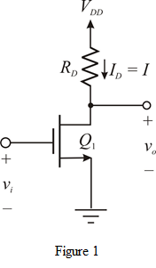
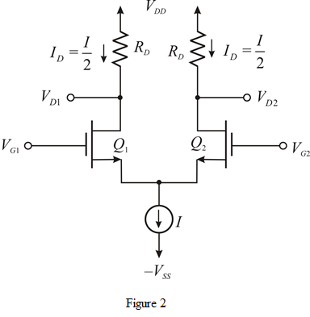

From Figure 2, the drain current for differential amplifier is,
Assume bias current  is equal to .
is equal to .
So,
The differential voltage gain for differential amplifier is,
.
The common-source (CS) amplifier is shown in Figure 1:

From Figure 1, the drain current for CS amplifier is,
The differential voltage gain for CS amplifier is,
or .
The MOS differential amplifier is shown in Figure 2:

From Figure 2, the drain current for differential amplifier is,
Assume bias current is equal to .
So,
The differential voltage gain for differential amplifier is,
.
Equating differential amplifier voltage gain and common-source amplifier voltage gain,
Substitute for .

Squaring on both sides
Thus, the common-source amplifier width is high compared to differential amplifier width.